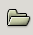

When you first start Gnumeric a new workbook will be opened. To save this workbook into a file, click on File->Save As … . This brings up the file dialog where you can pick the filename and format for the book you are saving. It is best to save the book in the Gnumeric XML file format the first time. This allows you to easily edit the file without worrying about changes in the format and look of the book.
Once the file has a name and a file format, saving subsequent
changes can be done easily either through the
File menu, through the toolbar or through a
keyboard shortcut. Saving with the menu requires selecting the
File and then the Save
menu item. Saving with the toolbar simply requires
clicking on
 in the tool bar. Finally saving with a keyboard shortcut simply
requires typing
Ctrl+S.
in the tool bar. Finally saving with a keyboard shortcut simply
requires typing
Ctrl+S.
Sometimes you want your book to be saved often so you do not lose any work. To save the book at intervals click on Tools->Auto Save …. The Auto Save dialog appears.
Click on the Automatic Save Every button and enter the number of minutes will pass between each save. When the interval is shorter more of your work will be potentially saved, but Gnumeric might appear sluggish. If Gnumeric is sluggish increase the time between saves. The button Prompt Before Saving brings up a dialog to ask if you want to save the book.
 | Warning |
|---|---|
Using the automatic saving feature of Gnumeric can save time but is dangerous. Gnumeric does not create a new file each time a file is saved but modifies an existing file destroying previous work. In certain situations, this feature can lead to the loss of possibly important work. Users are highly recommended to backup their work by copying the original file to a new name or by saving files to newly named files. | |
An existing spreadsheet file can be opened in several ways. If the file has an icon on the desktop, this icon can be clicked or double-clicked with the mouse button. Similarly, if a file manager, such as the Nautilus file manager, lists the file, then the file name can be clicked and opened. If Gnumeric is already opened, a file can be opened by clicking on the File and selecting the Open menu item. Alternatively, the "Open file" button on the toolbar, , can be used or the F3 key clicked. All three of these open the Open File dialog. You can then select the spreadsheet file you wish to open. Gnumeric can open many different types of spreadsheet file formats.
 | Note |
|---|---|
If the file has recently been opened in Gnumeric, the file name will appear in the File menu and can simply be clicked to re-open the file. | |